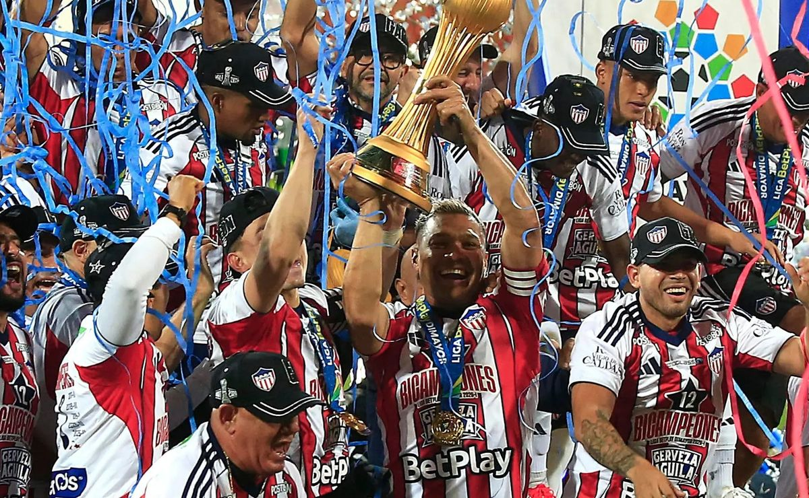
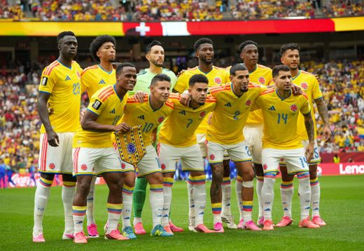
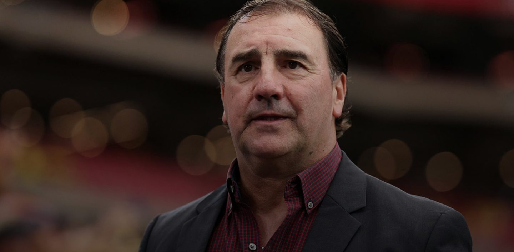

Noticias
Centro de Partidos


El show de la mañana

14 de Julio, 2026
Recorriendo el Supermetro: el alcalde habló de Junior

13 de Julio, 2026
¿Jhomier Guerrero a Millonarios? La salida del lateral de Junior

12 de Julio, 2026
¿Llegará? Juanfer Quintero y su posible regreso a Junior
11 de Julio, 2026
¡Sorpresiva llegada! El refuerzo de Junior que pocos esperaban
Mundo Junior
Temporada de humo 2026
- 14/06/2026 Millonarios compró a Jhomier Guerrero.
- 13/06/2026 Junior firmó a Marino Hinestroza.
- 12/06/2026 Atlético Nacional compró a Daniel Ruiz.
- 11/06/2026 El DIM contrató al volante Luis Sánchez.
- 10/06/2026 Junior aseguró al defensa Andrés Cadavid.
- 09/06/2026 Deportes Tolima fichó a Carlos Bacca.
- 08/06/2026 América de Cali firmó a Dorlan Pabón.
- 07/06/2026 Millonarios sumó al extremo Andrés Andrade.
Selección Colombia
Síguenos en Instagram
Detrás de cámaras, jugadas y lo mejor del show, en tu feed.